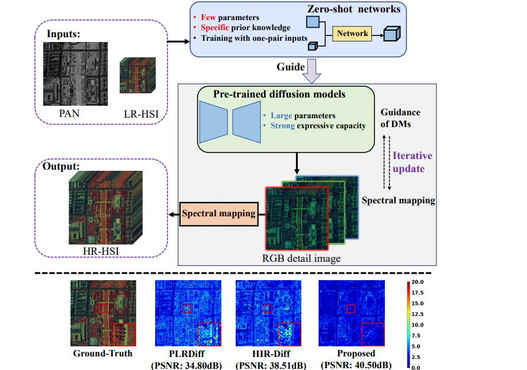
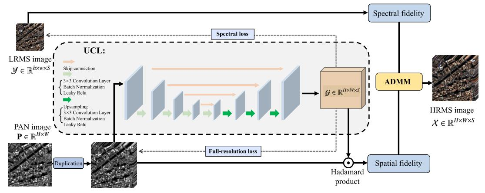
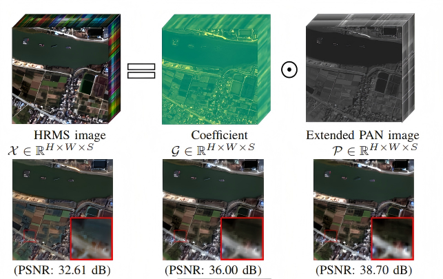
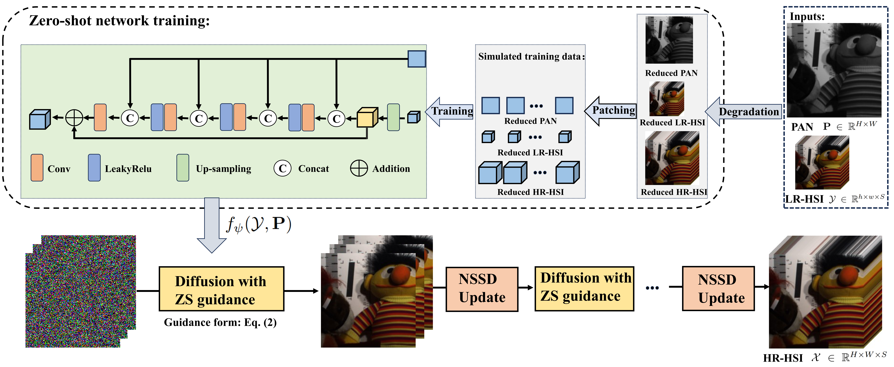
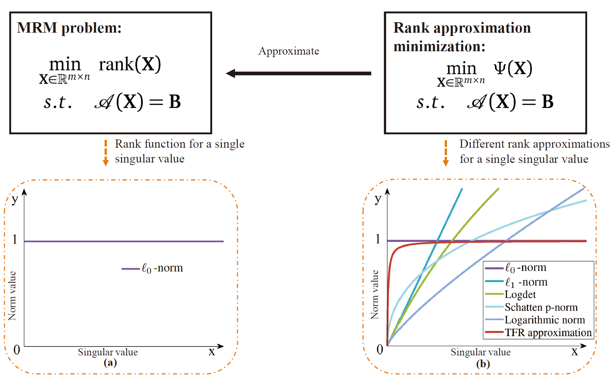
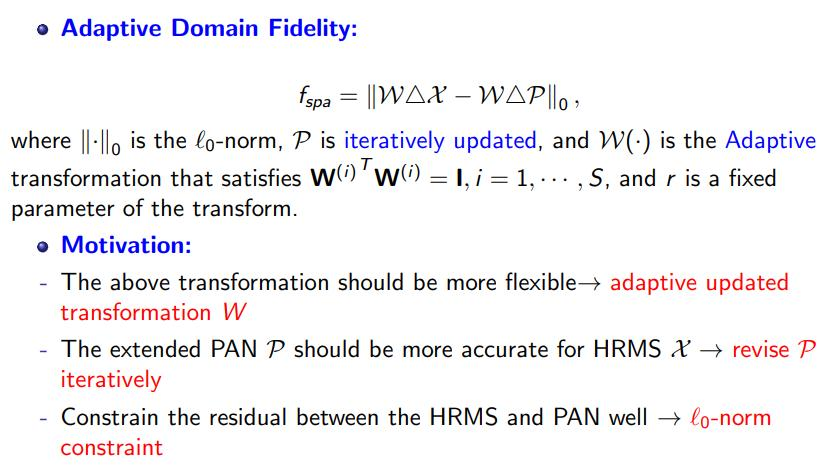
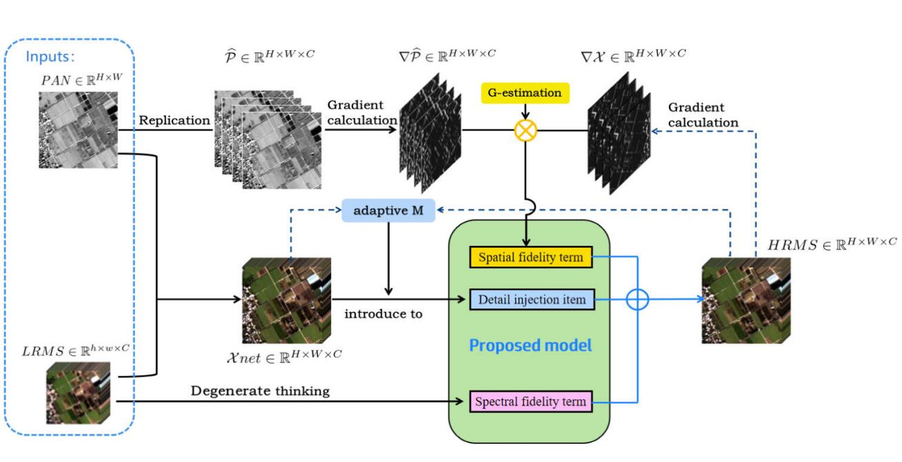

I'm currently working at the School of Mathematics, Southwest Jiaotong University.
Before that, I got my Ph.D. degree (supervised by Prof. Ting-Zhu Huang and Prof. Liang-Jian Deng) in mathematics with the School of Mathematical Sciences, University of Electronic Science and Technology of China in 2025. I received the B.S. degree in mathematics and applied mathematics from the Yunnan University, Kunming, Yunnan, China. In 2016 and 2017, I was a Joint-Training B.S. student in School of Mathematical Sciences, Fudan University.
From Nov. 2023 to Oct. 2024, I was an intern with the Tensor Learning Team, RIKEN AIP, Tokyo, Japan, under the supervision of Prof. Qibin Zhao.
My research interest is mainly focusing on Image Fusion, Tensor Learning, Deep Learning.

CVPR
IF
TGRS
IPI
EAJAM
IGARSS
GRSM09/2022-12/2025: UESTC; Ph. D. student in Mathematics (Supervisor: Prof. Ting-Zhu Huang and Prof. Liang-Jian Deng)
09/2020-06/2022: UESTC; Master student in Mathematics
09/2016-06/2018: Fudan University; Joint-Training Bachelor student in Mathematics
09/2015-06/2019: Yunnan University; Bachelor student in Mathematics